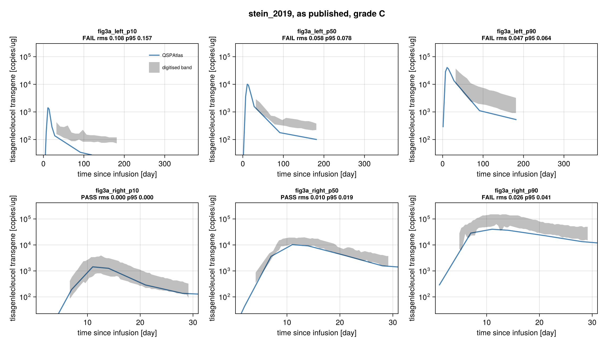
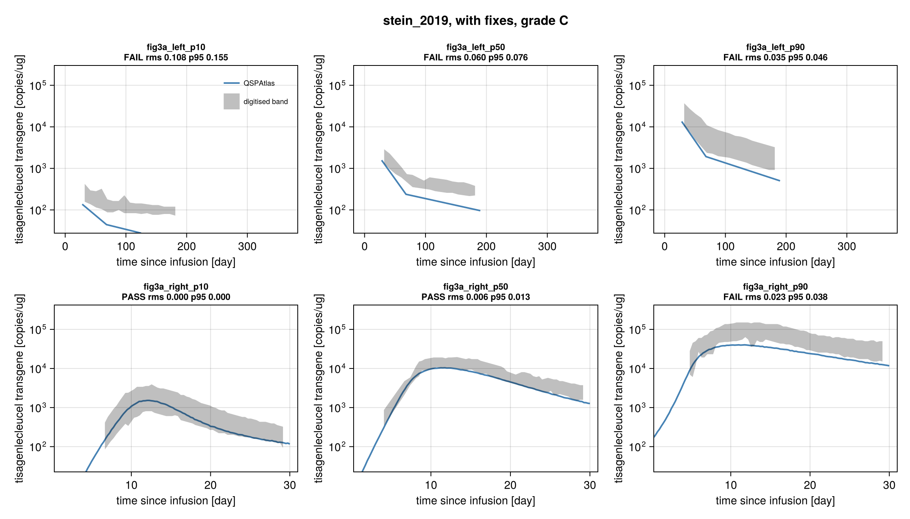
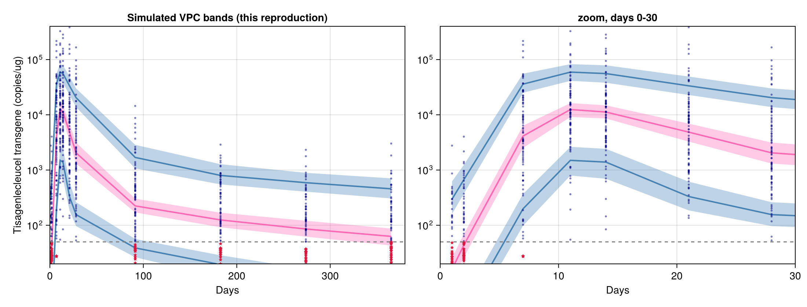

stein_2019: grade C
Stein AM, Grupp SA, Levine JE, et al. Tisagenlecleucel Model-Based Cellular Kinetic Analysis of Chimeric Antigen Receptor-T Cells. CPT Pharmacometrics Syst Pharmacol 2019;8:285-295. DOI 10.1002/psp4.12388, PMC6539725.
Grade C: the model runs and does not reproduce all six simulated percentile bands of Figure 3a under either run. As published (the most literal reading: 90 patients at the scheduled visit days, base model without comedication, Table 1 values, residual error) it matches the right-panel 10th and 50th percentile bands (2 of 6). With fixes, an assumed reconstruction of the VPC informed by the Monolix documentation (2026-11-05: least-squares bins, R5 percentiles, simulated BLQ kept, 90 % intervals, 500 simulations, per-patient comedication regressors with assumed spreads) with the base model of the supplement's mlxtran matches 4 of 6, conditional on those assumptions: all three right-panel bands and the left 90th percentile; the left 10th and 50th percentile bands of the persistence phase (days 30-185) stay well above the simulation. The paper does not state its VPC settings or its Monolix version, and the per-patient design (Data set S1) is not redistributed here, so the graded fixed run uses the nominal visits and comedication timings drawn from Table 2; on the S1 design itself (local check) the reconstruction matches 2 of 6. The settings were chosen after an earlier sensitivity run (2026-11-04, comedication model with assumed timing) had already shown that the comedication regressors improve agreement with the target (4 of 6 bands), so the reconstruction is not blind to the target, and the 4 of 6 holds only if the assumed settings are right: the binning method and the R5 percentile convention are documented only for Monolix 2024R1 (binning also for Monolix 4), not for the version the paper used, and the regressor spreads have no independent evidence. The result is "fails under this assumed reconstruction", not a definitive failure of the authors' simulation. Grade C means "runs, does not match", not "cannot run". Strict grade (article and supplement only): D (assumed design choices, cited Monolix sources for 2024R1 and Monolix 4, standard month length).
Model
Cellular kinetic model of CAR-T transgene copies/ug DNA (Eq. 1): exponential expansion C = R0 exp(rho t) up to Tmax (rho = ln(foldx)/Tmax, R0 = Cmax/foldx), then C = Cmax(1-FB) exp(-alpha (t-Tmax)) + Cmax FB exp(-beta (t-Tmax)). Implemented as the paper's own compartment model (Figure 2, supplement lines 6-31): effector cells E (grow at rho, then decline at alpha) and memory cells M (fed at k = FB(alpha-beta), decline at beta), C = E + M, MTK equations with ifelse on t against Tmax. The tocilizumab/corticosteroid effect (Eq. 2, Figure 1b) is in the model (T1, T2, F1, F2) and used in a sensitivity run only. The ODE matches the closed form of Eq. 1/2 and the supplement's Monolix code to 1.4e-9 relative error (Vern9, tolerance 1e-10; check_model).
Parameters (Table 1, sources in model.jl): foldx 3900, Tmax 9.3 d, Cmax 24000 copies/ug, alpha 0.16 /d, FB 0.0079, beta 0.0032 /d (Ftoci 1.2, Fster 1.0 not used in the graded run). All six log-normal with omega foldx 2.4, Tmax 0.38, Cmax 0.65, alpha 0.91, FB 0.8, beta 0.86; residual: constant error in log space, a = 0.56. Reading of Table 1: omega is a standard deviation of eta (Monolix convention; supplement line 77 "eta with variance omega^2"; the table gives no CV% or variance label), diagonal Omega, a is the sd of the log-scale residual (ExponentialError(0.56)). Typical values are consistent with the text (doubling time 0.78 d, half-lives 4.3 and 217-220 d).
Targets
Figure 3a (PSP4-8-285-g003.jpg), a Monolix VPC in two panels (0-380 d, and a zoom on 0-30 d), log y axis, LLOQ 50 copies/ug. Caption: blue lines are the 10/50/90th percentiles of the DATA (empirical, not graded); the shaded areas are the intervals of the percentiles from the model (blue 10th and 90th, pink 50th) and are the authors' simulation. Graded: six kind: band references (reference/fig3a_{left,right}_{p10,p50,p90}.csv, x,lo,hi), scored with the :band comparison (error 0 when the simulated percentile lies inside the band at that x, else the vertical distance to the nearest edge in axis-box units). Default tolerance (RMS 0.015, P95 0.03 of the box), which here is the allowance for digitising the band edges. Scored ranges: right panel p90 4.5-29.5 d, p50 3.4-4.4 and 6.4-29.5 d (red outlier marks cover 4.4-6.4 d), p10 6.4-29.5 d; left panel 30-185 d (before 30 d the band is under the data cloud and covered by the right panel; after ~187 d the band is a flat extension of the last bin). Figure 3b (individual fits) is not a simulation summary and is not a target.
Digitising: colour-run tracing of the band pixels (reference/trace_fig3a.jl, calibration and checks in digitise.toml, overlay figures/digitise_check.png is local only). y calibration uses the printed tick labels; the "100,000" label is displaced in the figure, and the grid lines do not coincide with the labels, so the y calibration has about 3 px (0.05-0.06 decade) of uncertainty; the LLOQ position (50 copies/ug) predicted from the labels agrees with the lowest quantifiable dots and the first simulated-BLQ dots within one dot radius. Digitising correction made after review (2026-11-04, after the first comparison): two points of the right p90 band (x = 8.8772 and 9.9825 d) had been traced from the lower (10th percentile) blue band where stacked dots split the upper band (found in review). They were dropped by a rule stated in trace_fig3a.jl and digitise.toml (a point whose whole interval lies away from its neighbours' interval), applied to all six targets; no other point was removed. Tolerance unchanged. Right p90 score before / after: rms 0.0515 / 0.0235 (with fixes), a fail either way.
Timeline: targets, tolerance and a first design (dense grid for all six bands, left-panel nodes read from the target) were frozen 2026-11-04 14:50 IST, before any simulation was compared with the bands (notes.md). The first comparison (graded design of that time; 400 replicates) gave rms left p10 0.107, p50 0.058, p90 0.033, right p10 0.000, p50 0.005, p90 0.052 (C). After review the graded runs were restructured (below) and the two misassigned reference points corrected; targets and tolerance were not otherwise changed. On 2026-11-05 the fixed run was replaced by the assumed VPC reconstruction informed by the Monolix documentation (after the first comparison; section below); targets, reference CSVs and tolerance unchanged.
Simulation design
Two graded runs, each with its own simulation (residual error included, Table 1 values, omega as SD, diagonal):
- "as published" (unchanged since the review round of 2026-11-04) = the most literal reading of Methods "Sample analysis": base model without comedication, 90 patients observed at the SCHEDULED visits (days 1, 2, 7, 11, 14, 21, 28, months 3 and 6 = 91.3 and 182.6 d), simulated BLQ values kept, quantile type 7; the simulated percentile at those times is joined by straight segments in (day, log10 copies) and compared with the band at each scored x (both panels). 800 replicates in blocks of 50 (seed 20260411 + block); the simulation also holds the dense grid of the previous fixed design.
- "with fixes" (since 2026-11-05) = the assumed VPC reconstruction informed by the Monolix documentation (section "VPC design reconstruction" below): base model of the mlxtran with per-patient comedication regressors (Ftoci 1.2, Fster 1.0), 90 patients at the nominal visits to one year (days 1, 2, 7, 11, 14, 21, 28, months 3, 6, 9, 12), regressors drawn from Table 2, least-squares bins of the pooled times (Lavielle & Bleakley 2011; one bin per visit on nominal times), type 5 (R5) percentiles of all simulated values, nodes at the bin mean times joined by straight segments in (day, log10 copies), 90 % intervals. 500 replicates (the Monolix default), blocks of 50, seed 20260411 + block.
- Previous "with fixes" design (2026-11-04 to 2026-11-05, now reported only): the as-published simulation read on a dense grid (0.25 d) for the right panel and at three left-panel bin nodes read from the target (28, 68, 190 d, :from_target). Its scores are in the Result table.
- The CAR-T dose is not an input (no dose-exposure relationship; the infusion enters through R0). Time t = days after infusion.
- Monte Carlo SE of the compared median (bootstrap over replicates, as in
vpc): as published at most 0.0023 of the axis box at any scored point (800 replicates); with fixes at most 0.0027 over the bin nodes the scored points are interpolated from (500 replicates). Both are below the 0.003 rule set beforehand, so 500 replicates were kept. The chunked type 7 percentile code of the as-published run is identical to QSPAtlasvpc(check_vpc_consistency, maximum difference 0.0). The type 5 percentiles and the least-squares binning are local toprotocol.jl(QSPAtlaspercentileshas type 7 and fixed or per-time bins only); src/ was not changed. - Runtime:
reproduce()takes about 32 s in a fresh session including compilation (4 threads), within the 4-minute budget set for this model. Until 2026-11-06 it took about 310 s, because QSPAtlas rebuilt the ModelingToolkit initialization problem for every simulated subject; the per-subject problem is now built by writing the values into a copy of the base problem, and every score is byte-identical to before. The cost is per simulated subject (a tighter or looser solver tolerance changes it little).reproduce(s1 = true)adds the local S1 checks.
Result
From score.toml. Grade: as published fails, with fixes fails, so C.
| band | scored x | as published rms / p95 | pass | previous with fixes rms / p95 | pass | with fixes (assumed reconstruction) rms / p95 | pass |
|---|---|---|---|---|---|---|---|
| right p10 (blue) | 6.4-29.5 d | 0.000 / 0.000 | yes | 0.000 / 0.000 | yes | 0.000 / 0.000 | yes |
| right p50 (pink) | 3.4-29.5 d | 0.010 / 0.019 | yes | 0.006 / 0.013 | yes | 0.005 / 0.007 | yes |
| right p90 (blue) | 4.5-29.5 d | 0.026 / 0.041 | no | 0.024 / 0.038 | no | 0.007 / 0.004 | yes |
| left p10 (blue) | 30-185 d | 0.108 / 0.157 | no | 0.108 / 0.155 | no | 0.096 / 0.142 | no |
| left p50 (pink) | 30-185 d | 0.059 / 0.078 | no | 0.060 / 0.076 | no | 0.038 / 0.054 | no |
| left p90 (blue) | 30-185 d | 0.047 / 0.064 | no | 0.035 / 0.046 | no | 0.011 / 0.019 | yes |
Bands passed: as published 2, previous with fixes 2, with fixes 4 of 6.
Where the reconstruction misses (median of the simulated percentile vs the authors' band): at the 3-month node (91.3 d) p10 39 and p50 224 copies/ug, at the 6-month node (182.6 d) p10 19 and p50 125, while the authors' left p10 band never falls below the LLOQ (about 73-120 at day 182) and the p50 band is about 220-380 at day 182. The comedication regressors raise the peak (right p90 at day 11: 59,000 copies/ug, inside the band) and the upper tail of the persistence phase (left p90 at 182.6 d: 800), but the lower and middle percentiles of the persistence phase stay several times the digitising allowance below the bands, as in every earlier variant.
Local check on the design of Data set S1 (reproduce(s1 = true), skipped when the file is absent; not graded because the design is not redistributed): the same Monolix settings on each patient's own sample times and regressors. Least-squares binning of the 836 pooled times gives 8 bins with nodes at 2.9, 6.5, 12.0, 20.3, 28.6, 83.5, 175 and 311 d. With the regressors (the full reconstruction, 2000 replicates, max MC SE 0.0025 box): 2 of 6 pass (right p10 rms 0.000, right p90 0.009); right p50 0.016 / p95 0.037, left p90 0.015 / 0.023 (both just above the RMS limit), left p50 0.043 and left p10 0.100 fail. The coarse first bins (nodes 2.9 and 6.5 d) cut through the expansion phase, which costs the right p50 band; the persistence-phase medians are the same as on the nominal design (p10 41 and p50 239 at 83.5 d, p10 20 and p50 120 at 175 d). Without the regressors (500 replicates): 1 of 6 (right p10).
Sensitivity runs (not graded; 800 replicates each; the comedication run below was later adopted for the graded fixed run, see the reconstruction section; reproduce(sensitivity = true); scores of 2026-11-04 with the previous designs). Pass count out of six bands, as published / previous with fixes:
- omega read as variances (sd = sqrt): 0 / 1 of 6 (left p90 passes in the with-fixes read; the right panel fails).
- BLQ censored to 50: 2 / 2 (right p10, p50; left p10 improves 0.108 to 0.052, still fails).
- comedication model, assumed timing (36 % tocilizumab, 26 % steroids, Table 2 medians/ranges, Ftoci 1.2, Fster 1.0): 4 / 4 (left p90 and all right bands pass; left p10 0.093 and p50 0.036 fail). This sampler is now part of the graded fixed run (mlxregressortiming); the reconstruction gives the same 4 of 6.
- residual sd halved: 2 / 2.
- left panel on the dense percentile curve instead of nodes: all three left bands fail in every variant (rms 0.02-0.13).
Local diagnostic (skipped when PSP4-8-285-s002.csv is absent): the paper's Data set S1 is described in the paper as a "simulated dataset based on the model". It has the real design (90 patients, 836 rows; 35.6 % tocilizumab at median 5.7 d, 25.6 % steroids at median 7.5 d, the Table 2 ranges) but its values are far above Figure 3a (median ~1.2e5 and p90 ~8e5 at days 9-12, maximum 2.4e8 copies/ug), so it is not patient data, cannot validate the model, and is not a target. Its design (times, regressors) is used by the local S1 check above; its values are not. figures/digitise_check_s1_diagnostic.png (local only) shows its percentiles against the as-published simulation.
Fixes
Design choices that the paper does not state (details, sources and evidence in protocol.jl). The as-published run (unchanged) lists seven shared fills (all_patients_all_times, residual_included, blq_kept, quantile_type7, base_model_no_comedication, omega_as_sd, omega_diagonal) plus scheduled_visits and days_per_month; it cannot be defined without them. The fixed run is the VPC design reconstruction of 2026-11-05, all of it chosen after the first comparison: it keeps all_patients_all_times, residual_included, omega_as_sd, omega_diagonal and days_per_month, and adds mlx_base_model_regressors (:supplement, the mlxtran), mlx_regressor_timing (:assumption, Table 2 marginals because S1 is not redistributed), mlx_nominal_visits (:interpretation), mlx_blq_simulated, mlx_pi_90_500 (:reference, Monolix 2024R1 documentation, Lavielle & Bleakley 2011 for the 90 % level) and mlx_ls_binning, mlx_percentile_r5, mlx_bin_node_mean_time (:assumption: least-squares binning and the R5 convention are documented for Monolix 2024R1 and Monolix 4 only, not for the paper's version; the node position is undocumented). All of them are after_comparison. It has no :from_target fix. The previous fixed run's dense_grid and left_bin_nodes (:fromtarget) are kept in `PREVIOUSFIXES` for the record. Model parameters were never changed.
Provenance
| fix | kind | basis | stage | runs | figures | evidence |
|---|---|---|---|---|---|---|
| allpatientsall_times | missing | assumption | before | both | fig3 | who was sampled when is not given |
| residual_included | ambiguity | interpretation | before | both | fig3 | VPC of observations; a = 0.56 in log space |
| blq_kept | ambiguity | interpretation | before | published | fig3 | caption plots simulated BLQ values; use in percentiles unstated |
| quantile_type7 | missing | assumption | before | published | fig3 | quantile convention unstated; R default |
| basemodelno_comedication | ambiguity | interpretation | before | published | fig3 | Results tie Fig 3 to the base model; Methods say full model |
| omegaassd | ambiguity | supplement | before | both | fig3 | supplement "eta with variance omega^2" |
| omega_diagonal | missing | assumption | before | both | fig3 | no correlations reported |
| scheduled_visits | ambiguity | interpretation | after | published | fig3 | Methods visit schedule, literal reading (set in review) |
| dayspermonth | missing | standard | after | both | fig3 | months at 365.25/12 d |
| mlxbasemodel_regressors | ambiguity | supplement | after | fixed | fig3 | mlxtran: Ftoci, Fster and regressors TOCI1T, STERSTT in the fitted (base = final) model |
| mlxregressortiming | missing | assumption | after | fixed | fig3 | Table 2 proportions, medians, ranges; log-normal shape, spreads and independence assumed, no independent evidence (S1 not redistributed) |
| mlxnominalvisits | missing | interpretation | after | fixed | fig3 | Methods schedule to month 12; Results "follow-up only 1 year" |
| mlxlsbinning | missing | assumption | after | fixed | fig3 | least-squares binning: Lavielle & Bleakley 2011 (Monolix 4); 2024R1 lists it as an option, equal width is its default; paper's version unknown |
| mlxbinnodemeantime | missing | assumption | after | fixed | fig3 | bin mean time (L&B); Monolix drawing position undocumented |
| mlxpercentiler5 | missing | assumption | after | fixed | fig3 | R5 documented for Monolix 2024R1 only; paper's version unknown |
| mlxblqsimulated | ambiguity | reference | after | fixed | fig3 | Monolix 2024R1: all simulated values enter the simulated percentiles |
| mlxpi90_500 | missing | reference | after | fixed | fig3 | Monolix 2024R1: 90 % PI, 500 simulations |
| dense_grid (previous) | missing | assumption | before | previous fixed | fig3 | VPC bins from unpublished sample times |
| leftbinnodes (previous) | from_target | figure | before | previous fixed | fig3 | nodes 28, 68, 190 d read from the band kinks |
Stage: "before" means part of the design frozen at 14:50 on 2026-11-04 before any comparison (notes.md); scheduled_visits and days_per_month came with the review round after the first comparison, as the literal reading, not by matching; the mlx_* fixes are the reconstruction of 2026-11-05, after the first comparison (and after the comedication sensitivity of 2026-11-04 had shown the regressors improve agreement), chosen from the sources named where a source exists; settings with no document for the paper's era carry basis :assumption. Strict grade D (bases :assumption, :standard and :reference). The fixed run has no :from_target fix, so a full match there would have been a B, not a B-dagger; it does not match.
VPC design reconstruction (2026-11-05)
Why: the paper does not state its VPC settings, and the previous fixed design took its left-panel nodes from the target. This is an assumed reconstruction informed by the Monolix documentation, built from sources other than Figure 3a. It is not blind to the target: it comes after the first comparison (2026-11-04) and after the previous designs' scores were known, and the comedication-regressor setting that produces its gain (4 of 6 instead of 2 of 6) had been run on 2026-11-04 as a sensitivity (comedication model with assumed timing, 4 of 6 bands) and shown to improve agreement before it was adopted. The settings were then fixed before the reconstruction itself was compared with the bands, and none was changed after; the binning, percentile and BLQ settings did not change the pass count. The 4 of 6 bands are therefore conditional on the assumptions listed below.
Which settings are documented, and for which Monolix version:
- Documented for Monolix 2024R1 (the paper's version, probably Monolix 2016R1 to 2019R1, is not stated and those pages could not be retrieved): 500 simulations, 90 % prediction intervals and the use of all simulated values (BLQ included) in the percentiles (basis :reference), and R5 percentiles (basis :assumption, because the paper's era is not documented). Binning: 2024R1 lists equal width as the default and least-squares as an option.
- Documented for Monolix 4 (Lavielle & Bleakley 2011, JPKPD 38:861-871): the least-squares automatic binning (beta 0.2, lambda 0.3) and 90 % intervals. That it was the default of the version the paper used is not documented (:assumption).
- Assumed, with no document: the bin node at the bin mean time, and the comedication regressor spreads (log-normal, independent, sd of log 0.7 and 1.2, clamps), which come from Table 2 marginals and have no independent evidence (Data set S1 is not redistributed).
What the sources say:
- Paper: Monolix (Lixoft) was used, no version given; BLQ data were fixed-point censored (CENSORING column); caption: red asterisks are simulated values for the BLQ measurements (the Monolix "BLQ simulated" display); Results tie Figure 3 to the base model and say the final model equals the base model; the longest follow-up was one year.
- Supplement S1 (
PSP4-8-285-s001.pdf, lines 100-152): the mlxtran holds only the model (no VPC or task settings): parameter = {foldx, Tmax, Cmax, Ftoci, Fster, alpha, FB, beta}, regressor = {TOCI1T, STERSTT}. The fitted base model therefore carries the comedication effect per patient. - Data set S1 (
PSP4-8-285-s002.csv): the study design (90 patients, 836 sample times from 0.88 to 379.8 d, TOCI1T for 32 and STERSTT for 23 patients); values simulated. - Monolix 2024R1 documentation, Visual predictive check (https://monolixsuite.slp-software.com/monolix/2024R1/visual-predictive-check): 10th/50th/90th percentiles, 90 % prediction intervals, 500 simulations of the data set's design, percentiles by "the piecewise linear method, also called R5"; binning equal width (default), equal size or least-squares, with an automatic bin count whose rule is not given.
- Monolix 2024R1, Correcting the VPC for missing observations (https://monolixsuite.slp-software.com/monolix/2024R1/correcting-the-vpc-for-missing-observations): with censored data used and simulated, "the VPC is simulated for all times including censored times, and all simulated values are used to calculate the simulated percentiles"; observed BLQ data are replaced by draws from their conditional distribution.
- Lavielle M, Bleakley K. Automatic data binning for improved visual diagnosis of pharmacometric models. J Pharmacokinet Pharmacodyn 2011;38:861-871 (HAL hal-00654842): the automatic binning of Monolix 4, J = sumk nk var_k^beta with beta = 0.2, number of bins by log J + lambda beta K with lambda = 0.3; 90 % intervals.
- Version-specific pages for Monolix 2016R1 to 2019R1, the versions current when the analysis was done, could not be retrieved (the old lixoft.com pages now redirect to 2024R1). Whether the paper's version used least-squares or equal-width bins by default, and R5 percentiles, is therefore not documented; least-squares is used because its algorithm is published in full, while the 2024R1 automatic equal-width count is not. This is an assumption, not the documented default.
Design graded (fixed run): base model of the mlxtran with per-patient regressors (Ftoci 1.2, Fster 1.0, no Cmax covariates); 90 patients at the nominal visits to one year; regressors drawn from Table 2 (S1 is not redistributed, so CI cannot use the patients' own values); least-squares bins (on nominal visits one bin per visit); type 5 percentiles of all simulated values including those below the LLOQ; nodes at the bin mean times; 90 % intervals (display only); 500 replicates (MC SE at most 0.0027 box).
Old vs new, bands passed: as published 2 of 6 (unchanged), previous with fixes 2 of 6, reconstruction 4 of 6 (right p90 0.024 to 0.007 and left p90 0.035 to 0.011 now pass; left p10 0.108 to 0.096 and left p50 0.060 to 0.038 still fail). The gain comes from the comedication regressors of the base model (the same 4 of 6 as the 2026-11-04 comedication sensitivity), not from the binning, percentile type or BLQ handling. Grade unchanged: C.
The S1 design itself (local check, not graded): 2 of 6 (right p10 and p90), with right p50 and left p90 just above the RMS limit (0.016 and 0.015) and left p10 and p50 far off (0.100, 0.043). On the authors' own design the least-squares bins are coarse in the expansion phase; the left-panel failure is the same as on the nominal design. Either way the grade is C.
What stays uncertain: the Monolix version and its default binning and percentile type; where Monolix draws a bin's node; whether the right panel (0-30 d, with more kinks than the left panel) is a separate VPC of the first 30 days, which could only be read from the figure; and the per-patient design, which is published (S1) but not redistributed here.
Issues found in the paper
- Table 1 random effects have no label saying SD, CV% or variance; the footnote formula for eta shrinkage ("(1 - var(eta))/omega^2") is also garbled. Read as SD here.
- Supplement line 10 prints dM/dt = alpha E - beta M; consistency with C2 = Cmax k/(alpha-beta) = Cmax FB requires dM/dt = k E - beta M.
- Supplement Eq. 6 gives dichotomous covariate effects as z = theta^x (a multiplier), while Table 1 labels them "log Cmax covariate effect" (additive in log). The Methods say the full covariate model is the final model, the Results that the final model is the base model (Table 1 has both the covariate effects and the typical values for the reference category). Which model produced Figure 3a is not stated.
- Fig 1b / Eq. 2: F < 1 is described as a decrease of the expansion rate, but the estimate is Ftoci = 1.2 (> 1). Under the supplement's CmaxAdjust, Ftoci = 1.2 for a patient given tocilizumab at the median 5.7 d (Tmax 9.3 d) raises the peak by exp(0.2 rho (Tmax - T1)), about 1.9 times, which makes "Cmax" a typical value only for patients without comedication.
- The VPC design is not described: bins, prediction-interval level, which patients and times were simulated, how BLQ values enter the VPC (only "red asterisks denote simulated data points for BLQ"). The comedication regressors of the VPC simulation are not stated. Data set S1 is a simulated data set whose values are inconsistent with Figure 3a; the real data are not available.
- Figure 3a: the y axis tick labels and grid lines do not coincide (the 100,000 label is displaced); the bands left of the first bin node and right of the last bin node are flat extensions.
- Caption says "confidence intervals" for the shaded areas, the legend says "Prediction interval".
- Time origin: Methods call day 1 the infusion day and list sampling at "days 1, 2, 7..."; the figure shows the first samples at about 0.7-1 d after infusion, so day N is read as t = N d.
Self-check (2026-11-04)
An independent rebuild from the paper and S1, with separate code (plain OrdinaryDiffEq, no shared code). The data set S1 (s002) was read at run time for its design only (ids, times, tocilizumab and steroid regressors); the values were ignored.
Structure: the closed form and the ODE agree to 3e-13 in log. The derived values match the text (doubling time 0.78 d, ln2/alpha 4.33 d, ln2/beta 217 d against "220").
Same unstated choices, made independently: omega read as SD (the footnote uses omega^2 for shrinkage, Monolix reports omega as an SD, and the variance reading puts the simulated p10 at days 10 to 13 at 350 to 600 against a band of about 700 to 3000), residual included, BLQ not censored, quantile bands from simulated replicates.
VPC (S1 design, 90 patients, 500 replicates, 90 % interval of each percentile; Table 1 values for the reference patient):
- p10 and p50 fall inside the bands to about day 90. At days 10 to 13: p10 1.3k to 1.8k (band 0.7k to 3k), p50 10.6k to 12.6k (band 9k to 20k).
- p90 at the peak is about 2x low: 44k to 56k against 75k to 170k. The covariate variant (Table 1 log-Cmax effects, covariates drawn from Table 2 frequencies) gives 68k to 90k, inside the band. This agrees with the comedication sensitivity here, where the right-panel bands pass.
- After day 150 all percentiles fall below the bands in every variant. In the pooled 185 to 380 d bin: p10 21 to 7.6 against 75 to 110, p50 122 to 55 against 200 to 420, p90 673 to 282 against 800 to 2800. The covariate model (p50 157 at day 183), omega as variance and LOQ handling do not close the gap. The published late bands would need FB x Cmax about 3x higher.
These are the same failures as here (p90 at the peak and the persistence phase). Together with the same structure and reading, they point to the paper side, not a transcription error. Grade unchanged.
Review
Independent review, 2026-11-04: the review agreed with grade C (runnable, not matching; the result is failure under an assumed design, not definitive failure of the authors' simulation). Equations, parameters, the SD reading of omega and the s002.csv finding (S1 is simulated) were found sound. One fix round on the review findings: (1) the unstated design choices recorded as Fixes with evidence, as published redefined as the scheduled visits; (2) two misassigned points of the right p90 reference corrected by a stated rule, tolerance unchanged, old and new scores in Targets; (3) replicates 400 to 800 so the MC SE is below the 0.003 rule (max 0.0023); (4) report wording fixed: the assumed design is not published, the 'base model' wording is in Results (not in the caption), MC SE stated correctly. The grade comes from the new scores: still C.
- The mlxtran code uses
tmax(lower case) in one branch while the parameter isTmax. - The mlxtran comment says non-recipients of a comedication have regressor value 99999; the data set S1 uses 9999. No effect, because the time is clipped at Tmax.
- Table 1 gives the Log Cmax covariate effects as negative numbers (-0.63, -0.36), which only make sense as exp(theta x), not as theta^x in Eq. 6.
- The text says Cmax is "twofold" higher with tocilizumab, while the Table 1 effect of 0.44 gives exp(0.44) = 1.55.
- The text links Figure 3a to the base model, but Table 1 holds the parameters of the full covariate model. No base-model estimates are published, so the base model of Fig 3a cannot be run as described.
What would raise the grade
The reconstruction leaves two bands (left p10 and p50, persistence phase) several times the digitising allowance below the authors' bands, under the nominal and under the S1 design, with and without the comedication regressors. Closing them would need something the published material does not give: the Monolix project (version, VPC settings, and whether the right panel is a separate VPC), or model values that give a higher persistence level (FB x Cmax) than Table 1. The independent self-check reached the same gap. Committing the S1 design (times and regressors) would let CI grade the S1 version of the reconstruction; that is a data-licence decision outside this model.
Files
model.jl, protocol.jl, reproduce.jl, reference/ (6 band CSVs, digitise.toml, trace_fig3a.jl, check_overlay.jl), figures/comparison.png (as published), figures/comparison_fixed.png, figures/fig3.png (the reconstructed VPC: 90 % intervals and medians of the simulated percentiles at the bin nodes, one simulated cohort of the reconstructed design; the paper's data and empirical lines are not shown), figures/digitise_check*.png (local only), score.toml. Notes: notes.md.
Literature check (2026-11-04)
The paper's Results tie the Figure 3 VPC to the base model. The Monolix project files in the supplement enter comedication per patient as time-of-first-dose regressors, and values below the limit of quantification as censored data that are simulated in the VPC. The caption's 10th, 50th and 90th percentiles with 90 % intervals match the Monolix 2024R1 defaults (500 simulations); the paper's own Monolix version is not stated. The supplement writes "variance omega^2", consistent with Table 1 reporting omega as a standard deviation. The FDA clinical pharmacology review of tisagenlecleucel is not publicly available.
Figures

Simulation (blue) against points digitised from the paper's figure (black), per target curve.

Simulation (blue) against points digitised from the paper's figure (black), per target curve.

Regenerated in the paper's layout: fig3.
Score file
Generated by reproduce.jl; source: models/stein_2019/score.toml.
as published
| curve | figure | RMS | P95 | tolerance (RMS / P95) | pass | coverage (reference / simulation, points) |
|---|---|---|---|---|---|---|
fig3a_left_p10 | Figure 3a left panel, shaded simulated interval of the 10th percentile (blue band) | 0.108 | 0.1568 | 0.015 / 0.03 | no | 37 % / 45 %, 17 |
fig3a_left_p50 | Figure 3a left panel, shaded simulated interval of the 50th percentile (pink band) | 0.05845 | 0.07839 | 0.015 / 0.03 | no | 37 % / 45 %, 16 |
fig3a_left_p90 | Figure 3a left panel, shaded simulated interval of the 90th percentile (blue band) | 0.04689 | 0.06444 | 0.015 / 0.03 | no | 37 % / 45 %, 17 |
fig3a_right_p10 | Figure 3a right panel, shaded simulated interval of the 10th percentile (blue band) | 0.0 | 0.0 | 0.015 / 0.03 | yes | 73 % / 98 %, 60 |
fig3a_right_p50 | Figure 3a right panel, shaded simulated interval of the 50th percentile (pink band) | 0.01033 | 0.01876 | 0.015 / 0.03 | yes | 82 % / 98 %, 52 |
fig3a_right_p90 | Figure 3a right panel, shaded simulated interval of the 90th percentile (blue band) | 0.02574 | 0.04079 | 0.015 / 0.03 | no | 79 % / 98 %, 65 |
Coverage is the span of the digitised reference x values as a share of the axis, then the share of the axis on which the simulation is defined, and the number of reference points. It is reported only and does not change the grade.
with fixes
| curve | figure | RMS | P95 | tolerance (RMS / P95) | pass | coverage (reference / simulation, points) |
|---|---|---|---|---|---|---|
fig3a_left_p10 | Figure 3a left panel, shaded simulated interval of the 10th percentile (blue band) | 0.09551 | 0.1419 | 0.015 / 0.03 | no | 37 % / 91 %, 17 |
fig3a_left_p50 | Figure 3a left panel, shaded simulated interval of the 50th percentile (pink band) | 0.03837 | 0.05405 | 0.015 / 0.03 | no | 37 % / 91 %, 16 |
fig3a_left_p90 | Figure 3a left panel, shaded simulated interval of the 90th percentile (blue band) | 0.01089 | 0.01912 | 0.015 / 0.03 | yes | 37 % / 91 %, 17 |
fig3a_right_p10 | Figure 3a right panel, shaded simulated interval of the 10th percentile (blue band) | 0.0 | 0.0 | 0.015 / 0.03 | yes | 73 % / 98 %, 60 |
fig3a_right_p50 | Figure 3a right panel, shaded simulated interval of the 50th percentile (pink band) | 0.004591 | 0.007424 | 0.015 / 0.03 | yes | 82 % / 98 %, 52 |
fig3a_right_p90 | Figure 3a right panel, shaded simulated interval of the 90th percentile (blue band) | 0.007241 | 0.004222 | 0.015 / 0.03 | yes | 79 % / 98 %, 65 |
Coverage is the span of the digitised reference x values as a share of the axis, then the share of the axis on which the simulation is defined, and the number of reference points. It is reported only and does not change the grade.
Source: models/stein_2019/